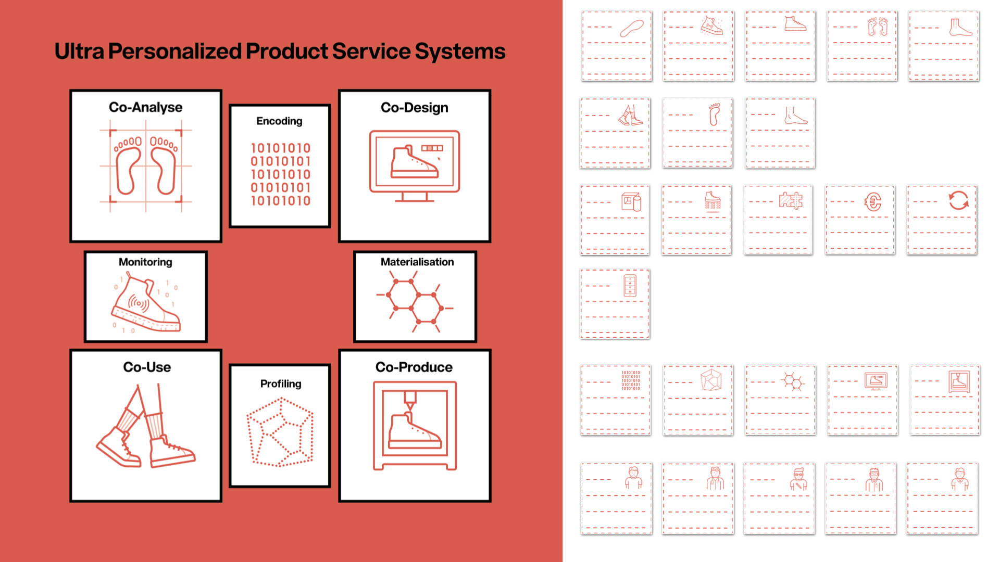
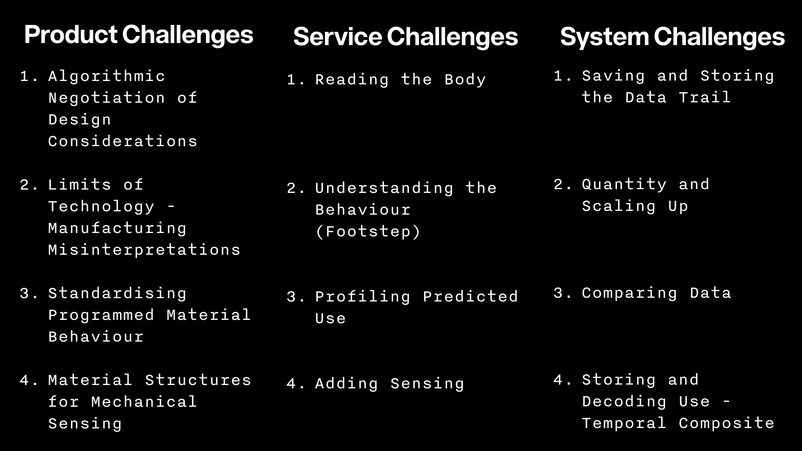

Icon design by Max Pirsky
Industry has different phases of production that are strategically organised into silos. These silos tend to solidify making circularity difficult as it invovles all the silos. The UPPSS game was originally created for ultra-personalization. Yet in its use itbecome clear UPPSS can be used in other situations such as circular lifetime design based upon iterative personalization. Product design is complex, but designing for lifetimes of products is even more so. Four years of research into Ultra-Personalized Product Service Systems (UPPSS) revealed important challenges faced in designing for Circular Lifetimes. Circular lifetime design required tools and techniques to face the challenge of designing not only the product but also the data flow and customer journey. As part of the ArcInTexETN research at TU/e Industrial Design, The UPPSS game was created to help designers create Ultra-Personalized Product Service Systems and help develop circular lifetimes. A series of papers were written about UPPSS and the game itself including From Personal to Ultra Personalized and Encoding Materials and Data for Iterative Personalization.
How the Game Works
The game uses a series of cards that have no descriptors. Participants are invited to add their own descriptions. Moreover, the participants are invited to make and modify the icons as needed to describe their particular case and situation. As design research, the icons chosen are used as a classification system, but the signifigance of each icon is described by the people playing the game. This allows the game to describe many situations and develop over time. Circular lifetime design requires thiniking over large amounts of time. The UPPSS game allows engaging the circular process through several iterations asking the designers to discover what future iterations might be.

To accomplish Circular Lifetimes, the designer is asked to answer the following the following questions for the game.
- Who is involved in the process? Create stakeholder cards for all the people involved.
- What are the objects involved? Create object cards for all the things involved.
- What happens in between each phase? Where is the data? How does the data change? Create cards that describe the data flow.
- How and when is the “fit” (physical, social, behavioural) analyzed? Create cards that show how the system evaluates itself?
- Look at the board as a system? Are there cards that contradict each other?
- Where are the challenges in the system? Identify the Challenges.
- What would make the process better? Identify the Opportunities.
- Repeat if needed.
- Use the cards to describe a customer journey and data flow for the UPPSS System.